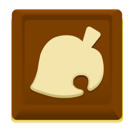

{% if var == 'odd' %}
{% if var == 'even' %}
{% endif %}
{% endfor %}

{% endif %}
{% if activity.link != "" %}
{{ activity.name }}
{% else %}
{{ activity.name }}
{% endif %}
{{ activity.date | date_to_long_string }}
{{ activity.content }}